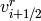
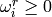
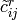
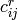

<!DOCTYPE html PUBLIC "-//W3C//DTD XHTML 1.0 Transitional//EN"
  "http://www.w3.org/TR/xhtml1/DTD/xhtml1-transitional.dtd">

<html xmlns="http://www.w3.org/1999/xhtml">
  <head>
    <meta http-equiv="Content-Type" content="text/html; charset=utf-8" />
    
    <title>Reference &mdash; PyWENO v0.1 documentation</title>
    <link rel="stylesheet" href="static/default.css" type="text/css" />
    <link rel="stylesheet" href="static/pygments.css" type="text/css" />
    <script type="text/javascript">
      var DOCUMENTATION_OPTIONS = {
        URL_ROOT:    '',
        VERSION:     '0.1',
        COLLAPSE_MODINDEX: false,
        FILE_SUFFIX: '.html',
        HAS_SOURCE:  true
      };
    </script>
    <script type="text/javascript" src="static/jquery.js"></script>
    <script type="text/javascript" src="static/doctools.js"></script>
    <link rel="top" title="PyWENO v0.1 documentation" href="index.html" />
    <link rel="up" title="Documentation" href="documentation.html" />
    <link rel="next" title="Smoothness indicators" href="smoothness.html" />
    <link rel="prev" title="Examples" href="examples.html" /> 
  </head>
  <body>
    <div class="related">
      <h3>Navigation</h3>
      <ul>
        <li class="right" style="margin-right: 10px">
          <a href="genindex.html" title="General Index"
             accesskey="I">index</a></li>
        <li class="right" >
          <a href="modindex.html" title="Global Module Index"
             accesskey="M">modules</a> |</li>
        <li class="right" >
          <a href="smoothness.html" title="Smoothness indicators"
             accesskey="N">next</a> |</li>
        <li class="right" >
          <a href="examples.html" title="Examples"
             accesskey="P">previous</a> |</li>
        <li><a href="index.html">PyWENO v0.1 documentation</a> &raquo;</li>
          <li><a href="documentation.html" accesskey="U">Documentation</a> &raquo;</li> 
      </ul>
    </div>  

    <div class="document">
      <div class="documentwrapper">
        <div class="bodywrapper">
          <div class="body">
            
  <div class="section" id="reference">
<h1>Reference<a class="headerlink" href="#reference" title="Permalink to this headline">¶</a></h1>
<div class="section" id="weno">
<h2>WENO<a class="headerlink" href="#weno" title="Permalink to this headline">¶</a></h2>
<dl class="class">
<dt id="pyweno.weno.WENO">
<em class="property">
class </em><tt class="descclassname">pyweno.weno.</tt><tt class="descname">WENO</tt><big>(</big><em>order=3</em>, <em>cache=None</em>, <em>format='mat'</em>, <em>smoothness='jiang_shu'</em>, <em>grid=None</em><big>)</big><a class="headerlink" href="#pyweno.weno.WENO" title="Permalink to this definition">¶</a></dt>
<dd><p>Weighted Essentially Non-Oscillatory reconstruction.</p>
<p>XXX: this docstring needs work!</p>
<p>The basic idea of WENO is to use a convex combination of several
stencils to form the reconstruction of  at cell
boundaries, and, if a stencil contains a discontinuity, its weight
 should be close to zero.  In smooth regions, using
several stencils will also serve to increase the order of
accuracy.</p>
<p>Briefly, a WENO reconstruction takes a convex combination of all
 defined by</p>
<blockquote>
</blockquote>
<p>as a new approximation to  according to</p>
<blockquote>
</blockquote>
<p>where we require  and .</p>
<p>Instance variables:</p>
<blockquote>
<ul class="simple">
<li><em>grid</em>  - spatial grid (&#8216;&#8217;pyweno.Grid&#8217;&#8216;)</li>
<li><em>order</em> - order of approximation</li>
<li><em>c_l</em>   - matrix of coefficients  (indexed as c_l[i,r,j])</li>
<li><em>c_r</em>   - matrix of coefficients  (indexed as c_r[i,r,j])</li>
<li><em>w_l</em>   - matrix of optimal weights  (indexed as w_l[i,r])</li>
<li><em>w_r</em>   - matrix of optimal weights  (indexed as w_r[i,r])</li>
</ul>
</blockquote>
<p>The constructor precomputes the reconstruction coefficients
 of order <em>order</em> and the optimal weights
 for the unstructered grid <em>grid</em>, or loads
them from a cache.</p>
<p>Arguments (without cache):</p>
<blockquote>
<ul class="simple">
<li><em>grid</em>    - spatial grid (<em>Grid</em>)</li>
<li><em>order</em>   - order of approximation</li>
</ul>
</blockquote>
<p>Arguments (with cache):</p>
<blockquote>
<ul class="simple">
<li><em>cache</em>  - cache file</li>
<li><em>format</em> - format of cache file (default is &#8216;mat&#8217;)</li>
</ul>
</blockquote>
<dl class="method">
<dt id="pyweno.weno.WENO.cache">
<tt class="descname">cache</tt><big>(</big><em>output</em>, <em>format='mat'</em><big>)</big><a class="headerlink" href="#pyweno.weno.WENO.cache" title="Permalink to this definition">¶</a></dt>
<dd>Cache grid, reconstruction coefficients, and optimal
weights.</dd></dl>

<dl class="method">
<dt id="pyweno.weno.WENO.precompute_reconstruction">
<tt class="descname">precompute_reconstruction</tt><big>(</big><em>key</em>, <em>xi=None</em><big>)</big><a class="headerlink" href="#pyweno.weno.WENO.precompute_reconstruction" title="Permalink to this definition">¶</a></dt>
<dd><p>Precompute reconstruction coefficients and optimal weights
for reconstructing at the points specified by <em>key</em>.</p>
<p>If <em>xi</em> is None, XXX</p>
<p>If <em>xi</em> isn&#8217;t None, XXX</p>
</dd></dl>

<dl class="method">
<dt id="pyweno.weno.WENO.reconstruct">
<tt class="descname">reconstruct</tt><big>(</big><em>q</em>, <em>key</em>, <em>qs</em><big>)</big><a class="headerlink" href="#pyweno.weno.WENO.reconstruct" title="Permalink to this definition">¶</a></dt>
<dd>Reconstruct <em>q</em> at the points specified by <em>key</em> and store
result in <em>qs</em>.</dd></dl>

<dl class="method">
<dt id="pyweno.weno.WENO.smoothness">
<tt class="descname">smoothness</tt><big>(</big><em>q</em><big>)</big><a class="headerlink" href="#pyweno.weno.WENO.smoothness" title="Permalink to this definition">¶</a></dt>
<dd>Compute smoothness indicators of <em>q</em>.</dd></dl>

</dd></dl>

</div>
<div class="section" id="grid">
<h2>Grid<a class="headerlink" href="#grid" title="Permalink to this headline">¶</a></h2>
<dl class="class">
<dt id="pyweno.grid.Grid">
<em class="property">
class </em><tt class="descclassname">pyweno.grid.</tt><tt class="descname">Grid</tt><big>(</big><em>boundaries=None</em>, <em>cache=None</em>, <em>format='mat'</em><big>)</big><a class="headerlink" href="#pyweno.grid.Grid" title="Permalink to this definition">¶</a></dt>
<dd><p>Unstructured spatial grid (discretisation).</p>
<p>Instance variables:</p>
<blockquote>
<ul class="simple">
<li><em>size</em> - number of cells (usually denoted <em>N</em>)</li>
<li><em>N</em>    - as above</li>
<li><em>x</em>    - grid boundaries</li>
</ul>
</blockquote>
<p>The constructor precomputes cell centres and sizes from the cell
boundaries <em>boundaries</em>.</p>
<p>Arguments: (without cache)</p>
<blockquote>
<ul>
<li><dl class="first docutils">
<dt><em>boundaries</em> - list of grid cell boundaries (eg,</dt>
<dd><p class="first last">&#8216;&#8217;numpy.linspace(-1.0, 1.0, 20+1)&#8217;&#8216;)</p>
</dd>
</dl>
</li>
</ul>
</blockquote>
<p>The cell boundaries do <strong>not</strong> have to be structured (ie,
uniformly spaced).</p>
<p>Arguments: (with cache)</p>
<blockquote>
<ul class="simple">
<li><em>cache</em>  - cache filename</li>
<li><em>format</em> - cache format (default is &#8216;mat&#8217;)</li>
</ul>
</blockquote>
<dl class="method">
<dt id="pyweno.grid.Grid.average">
<tt class="descname">average</tt><big>(</big><em>f</em><big>)</big><a class="headerlink" href="#pyweno.grid.Grid.average" title="Permalink to this definition">¶</a></dt>
<dd>Return cell averages of <em>f</em>.</dd></dl>

<dl class="method">
<dt id="pyweno.grid.Grid.boundaries">
<tt class="descname">boundaries</tt><big>(</big><big>)</big><a class="headerlink" href="#pyweno.grid.Grid.boundaries" title="Permalink to this definition">¶</a></dt>
<dd>Return array of <em>N+1</em> cell boundaries.</dd></dl>

<dl class="method">
<dt id="pyweno.grid.Grid.cache">
<tt class="descname">cache</tt><big>(</big><em>output</em>, <em>format='mat'</em><big>)</big><a class="headerlink" href="#pyweno.grid.Grid.cache" title="Permalink to this definition">¶</a></dt>
<dd><p>Cache grid.</p>
<ol class="upperroman simple" start="30">
<li></li>
</ol>
</dd></dl>

<dl class="method">
<dt id="pyweno.grid.Grid.centers">
<tt class="descname">centers</tt><big>(</big><big>)</big><a class="headerlink" href="#pyweno.grid.Grid.centers" title="Permalink to this definition">¶</a></dt>
<dd>Return array of <em>N</em> cell centers.</dd></dl>

<dl class="method">
<dt id="pyweno.grid.Grid.centres">
<tt class="descname">centres</tt><big>(</big><big>)</big><a class="headerlink" href="#pyweno.grid.Grid.centres" title="Permalink to this definition">¶</a></dt>
<dd>Return array of <em>N</em> cell centres.</dd></dl>

<dl class="method">
<dt id="pyweno.grid.Grid.sizes">
<tt class="descname">sizes</tt><big>(</big><big>)</big><a class="headerlink" href="#pyweno.grid.Grid.sizes" title="Permalink to this definition">¶</a></dt>
<dd>Return array of <em>N</em> cell sizes.</dd></dl>

</dd></dl>

</div>
<div class="section" id="stencil">
<h2>Stencil<a class="headerlink" href="#stencil" title="Permalink to this headline">¶</a></h2>
<dl class="class">
<dt id="pyweno.stencil.Stencil">
<em class="property">
class </em><tt class="descclassname">pyweno.stencil.</tt><tt class="descname">Stencil</tt><big>(</big><em>grid=None</em>, <em>order=None</em>, <em>quad=None</em>, <em>shift=None</em>, <em>cache=None</em>, <em>format='mat'</em><big>)</big><a class="headerlink" href="#pyweno.stencil.Stencil" title="Permalink to this definition">¶</a></dt>
<dd><p>Polynomial approximation stencil.</p>
<p>The cell averages v_i of a function v can be used to approximate
the value of v (and its derivatives) according to</p>
<p>..math:: v^{(d)}(xi) pprox sum_{j=0}^k c_j v_{i-r+j}</p>
<p>where the coefficients c_j are the <em>reconstruction coefficients</em>.
The reconstruction coefficients depend on the point xi, cell i,
shift r, order k, derivative d, and grid x; but <em>not</em> on the
function v.</p>
<p>XXX: move the next few paragraphs to reST documentation</p>
<p>The Stencil class is used to precompute various sets of
reconstruction coefficients and cache them.  For example:</p>
<div class="highlight-python"><div class="highlight"><pre><span class="gp">&gt;&gt;&gt; </span><span class="n">stencil</span> <span class="o">=</span> <span class="n">pyweno</span><span class="o">.</span><span class="n">stencil</span><span class="o">.</span><span class="n">Stencil</span><span class="p">(</span><span class="n">order</span><span class="o">=</span><span class="n">k</span><span class="p">,</span> <span class="n">shift</span><span class="o">=</span><span class="n">r</span><span class="p">,</span> <span class="n">grid</span><span class="o">=</span><span class="n">grid</span><span class="p">)</span>
<span class="gp">&gt;&gt;&gt; </span><span class="n">stencil</span><span class="o">.</span><span class="n">reconstruction_coeffs</span><span class="p">(</span><span class="s">&#39;left&#39;</span><span class="p">)</span>
<span class="gp">&gt;&gt;&gt; </span><span class="n">stencil</span><span class="o">.</span><span class="n">reconstruction_coeffs</span><span class="p">(</span><span class="s">&#39;right&#39;</span><span class="p">)</span>
</pre></div>
</div>
<p>pre-computes the reconstruction coefficients c_j of order k and
left-shift r at the left and right boundaries of each cell in the
grid.  Subsequently:</p>
<div class="highlight-python"><div class="highlight"><pre><span class="gp">&gt;&gt;&gt; </span><span class="n">c</span> <span class="o">=</span> <span class="n">stencil</span><span class="o">.</span><span class="n">c</span><span class="p">[</span><span class="s">&#39;left&#39;</span><span class="p">][</span><span class="n">i</span><span class="p">,:]</span>
<span class="gp">&gt;&gt;&gt; </span><span class="n">y</span> <span class="o">=</span> <span class="n">numpy</span><span class="o">.</span><span class="n">dot</span><span class="p">(</span><span class="n">c</span><span class="p">,</span> <span class="n">v</span><span class="p">[</span><span class="n">i</span><span class="o">-</span><span class="n">r</span><span class="p">:</span><span class="n">i</span><span class="o">-</span><span class="n">r</span><span class="o">+</span><span class="n">k</span><span class="p">])</span>
</pre></div>
</div>
<p>approximates the function v at the left edge of the i&#8217;th cell.
That is:</p>
<div class="highlight-python"><pre>.. math:: y pprox v(x_{i-1/2}).</pre>
</div>
<p>Instance variables:</p>
<blockquote>
<ul class="simple">
<li><em>c</em>     - dictionary of reconstruction coefficients</li>
<li><em>order</em> - order of approximation (usually denoted k)</li>
<li><em>k</em>     - as above</li>
<li><em>shift</em> - left shift (usually denoted r)</li>
<li><em>r</em>     - as above</li>
<li><em>grid</em>  - spatial grid (&#8216;&#8217;pyweno.Grid&#8217;&#8216;)</li>
</ul>
</blockquote>
<p>Keyword arguments (without cache):</p>
<blockquote>
<ul class="simple">
<li><em>order</em> - order of approximation</li>
<li><em>shift</em> - left shift of the stencil or &#8216;&#8217;None&#8217;&#8216;</li>
<li><em>grid</em>  - spatial grid (&#8216;&#8217;pyweno.Grid&#8217;&#8216;)</li>
</ul>
</blockquote>
<p>The default shift (computed when shift is &#8216;&#8217;None&#8217;&#8216;) is a centered
difference shift (ie, shift = order/2 + order%2).</p>
<p>The left shift <em>shift</em> can take values from 0 to <em>order</em>-1.</p>
<p>Keyword arguments (with cache):</p>
<blockquote>
<ul class="simple">
<li><em>order</em>  - order of approximation</li>
<li><em>shift</em>  - left shift of the stencil or &#8216;&#8217;None&#8217;&#8216;</li>
<li><em>cache</em>  - cache filename</li>
<li><em>format</em> - cache format (default is &#8216;mat&#8217;)</li>
</ul>
</blockquote>
<dl class="method">
<dt id="pyweno.stencil.Stencil.cache">
<tt class="descname">cache</tt><big>(</big><em>output</em>, <em>format='mat'</em><big>)</big><a class="headerlink" href="#pyweno.stencil.Stencil.cache" title="Permalink to this definition">¶</a></dt>
<dd><p>Cache reconstruction coeffs and quadrature coeffs (if
defined).</p>
<p>XXX</p>
</dd></dl>

<dl class="method">
<dt id="pyweno.stencil.Stencil.reconstruction_coeffs">
<tt class="descname">reconstruction_coeffs</tt><big>(</big><em>key</em>, <em>xi=None</em><big>)</big><a class="headerlink" href="#pyweno.stencil.Stencil.reconstruction_coeffs" title="Permalink to this definition">¶</a></dt>
<dd><p>Pre-compute reconstruction coefficients.</p>
<p>The reconstruction coeffs c_j are computed and stored in
the instance dictionary <em>c</em>.</p>
<p>Arguments:</p>
<blockquote>
<ul class="simple">
<li><em>key</em> - key used to store this set of reconstruction coeffs</li>
<li><em>xi</em> - callable to return array of points within each
cell at which to compute the reconstruction
coefficients (called as &#8216;&#8217;xi(i)&#8217;&#8216;)</li>
</ul>
</blockquote>
<p>Preceeding the key with d| will compute the reconstruction
coefficients to approximate the first derivative at the
reconstruction points.</p>
<p>There are several predefined keys:</p>
<blockquote>
<ul class="simple">
<li>&#8216;left&#8217; - the left edge of each cell</li>
<li>&#8216;right&#8217; - the right edge of each cell</li>
<li>&#8216;gauss_quad3&#8217; - the Gaussian 3-point quadrature points</li>
</ul>
</blockquote>
<p>For example, to compute the reconstruction coeffs used to
reconstruct the derivative of a function f at the left edge
of each grid cell:</p>
<div class="highlight-python"><div class="highlight"><pre><span class="gp">&gt;&gt;&gt; </span><span class="n">stencil</span><span class="o">.</span><span class="n">reconstruction_ceoffs</span><span class="p">(</span><span class="s">&#39;d|left&#39;</span><span class="p">)</span>
<span class="gp">&gt;&gt;&gt; </span><span class="n">c</span> <span class="o">=</span> <span class="n">stencil</span><span class="o">.</span><span class="n">c</span><span class="p">[</span><span class="s">&#39;d|left&#39;</span><span class="p">]</span>
</pre></div>
</div>
<p>As another example, to compute the reconstruction coeffs
used to reconstruct the value of a function at some other
point(s) within each cell:</p>
<div class="highlight-python"><div class="highlight"><pre><span class="gp">&gt;&gt;&gt; </span><span class="n">stencil</span><span class="o">.</span><span class="n">reconstruction_ceoffs</span><span class="p">(</span><span class="s">&#39;mypts&#39;</span><span class="p">,</span> <span class="k">lambda</span> <span class="n">i</span><span class="p">:</span> <span class="mf">0.5</span> <span class="o">*</span> <span class="p">(</span><span class="n">grid</span><span class="o">.</span><span class="n">x</span><span class="p">[</span><span class="n">i</span><span class="p">]</span> <span class="o">+</span> <span class="n">grid</span><span class="o">.</span><span class="n">x</span><span class="p">[</span><span class="n">i</span><span class="o">+</span><span class="mf">1</span><span class="p">]))</span>
<span class="gp">&gt;&gt;&gt; </span><span class="n">c</span> <span class="o">=</span> <span class="n">stencil</span><span class="o">.</span><span class="n">c</span><span class="p">[</span><span class="s">&#39;d|left&#39;</span><span class="p">]</span>
</pre></div>
</div>
</dd></dl>

</dd></dl>

<dl class="function">
<dt id="pyweno.stencil.reconstruction_coeffs">
<tt class="descclassname">pyweno.stencil.</tt><tt class="descname">reconstruction_coeffs</tt><big>(</big><em>xi</em>, <em>i</em>, <em>r</em>, <em>k</em>, <em>x</em>, <em>c</em>, <em>d=0</em><big>)</big><a class="headerlink" href="#pyweno.stencil.reconstruction_coeffs" title="Permalink to this definition">¶</a></dt>
<dd><p>Compute the reconstruction coefficients c_j and store the
results in <em>c</em> (indexed as c[j]).</p>
<p>The reconstruction coefficients c_j are used to approximate the
d&#8217;th derivative of a function v given its cell averages v_j
according to</p>
<p>..math:: v^{(d)}(xi) pprox sum_{j=0}^k c_j v_{i-r+j}.</p>
<p>The reconstruction coefficients c_j depend on the point xi, cell
i, shift r, order k, derivative d, and grid x; but <em>not</em> on the
function v.</p>
<p>This function wraps a fast C implementation.</p>
<p>Arguments:</p>
<blockquote>
<ul class="simple">
<li><em>xi</em> - reconstruction point</li>
<li><em>i</em> - cell index</li>
<li><em>r</em> - left shift</li>
<li><em>k</em> - order</li>
<li><em>d</em> - order of derivative (defaults to 0)</li>
<li><em>x</em> - cell boundaries</li>
<li><em>c</em> - computed reconstruction coefficients (returned)</li>
</ul>
</blockquote>
<p>Return: the reconstruction coefficients are stored in <em>c</em>.</p>
</dd></dl>

</div>
<div class="section" id="module-pyweno.version">
<h2>Version<a class="headerlink" href="#module-pyweno.version" title="Permalink to this headline">¶</a></h2>
<p>PyWENO version information.</p>
<p>To obtain the version of PyWENO:</p>
<div class="highlight-python"><div class="highlight"><pre><span class="gp">&gt;&gt;&gt; </span><span class="kn">import</span> <span class="nn">pyweno.version</span>
<span class="gp">&gt;&gt;&gt; </span><span class="n">pyweno</span><span class="o">.</span><span class="n">version</span><span class="o">.</span><span class="n">version</span><span class="p">()</span>
<span class="gp">&gt;&gt;&gt; </span><span class="n">pyweno</span><span class="o">.</span><span class="n">version</span><span class="o">.</span><span class="n">git_version</span><span class="p">()</span>
</pre></div>
</div>
</div>
</div>


          </div>
        </div>
      </div>
      <div class="sphinxsidebar">
        <div class="sphinxsidebarwrapper">
            <h3><a href="index.html">Table Of Contents</a></h3>
            <ul>
<li><a class="reference external" href="">Reference</a><ul>
<li><a class="reference external" href="#weno">WENO</a></li>
<li><a class="reference external" href="#grid">Grid</a></li>
<li><a class="reference external" href="#stencil">Stencil</a></li>
<li><a class="reference external" href="#module-pyweno.version">Version</a></li>
</ul>
</li>
</ul>

            <h4>Previous topic</h4>
            <p class="topless"><a href="examples.html"
                                  title="previous chapter">Examples</a></p>
            <h4>Next topic</h4>
            <p class="topless"><a href="smoothness.html"
                                  title="next chapter">Smoothness indicators</a></p>
            <h3>This Page</h3>
            <ul class="this-page-menu">
              <li><a href="sources/weno.txt"
                     rel="nofollow">Show Source</a></li>
            </ul>
          <div id="searchbox" style="display: none">
            <h3>Quick search</h3>
              <form class="search" action="search.html" method="get">
                <input type="text" name="q" size="18" />
                <input type="submit" value="Go" />
                <input type="hidden" name="check_keywords" value="yes" />
                <input type="hidden" name="area" value="default" />
              </form>
              <p class="searchtip" style="font-size: 90%">
              Enter search terms or a module, class or function name.
              </p>
          </div>
          <script type="text/javascript">$('#searchbox').show(0);</script>
        </div>
      </div>
      <div class="clearer"></div>
    </div>
    <div class="related">
      <h3>Navigation</h3>
      <ul>
        <li class="right" style="margin-right: 10px">
          <a href="genindex.html" title="General Index"
             >index</a></li>
        <li class="right" >
          <a href="modindex.html" title="Global Module Index"
             >modules</a> |</li>
        <li class="right" >
          <a href="smoothness.html" title="Smoothness indicators"
             >next</a> |</li>
        <li class="right" >
          <a href="examples.html" title="Examples"
             >previous</a> |</li>
        <li><a href="index.html">PyWENO v0.1 documentation</a> &raquo;</li>
          <li><a href="documentation.html" >Documentation</a> &raquo;</li> 
      </ul>
    </div>
    <div class="footer">
      &copy; Copyright 2009, Matthew Emmett.
      Created using <a href="http://sphinx.pocoo.org/">Sphinx</a> 0.6.1.
    </div>
  </body>
</html>